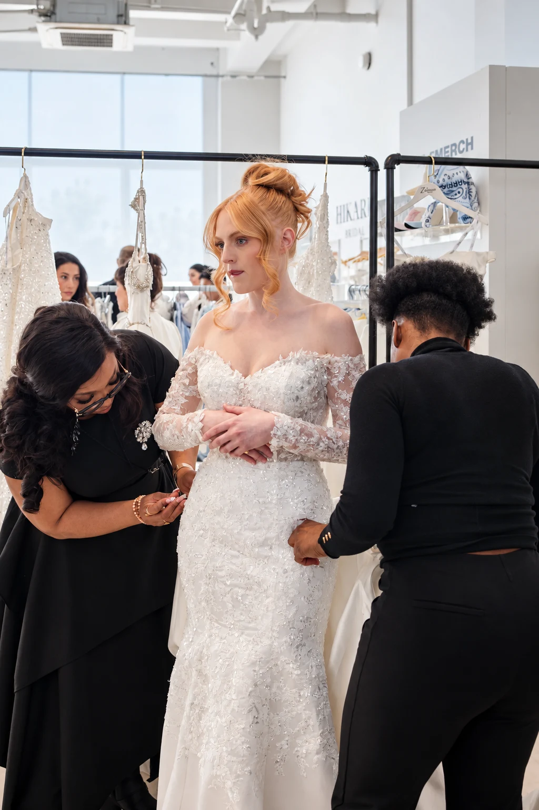

The Journal · 2026-09-20
From Port Harcourt to New York: Zateemee Takes the New York Bridal Market!
From Port Harcourt to New York City! We packed our gowns, our dreams, a whole lot of excitement and headed to New York for our very first New York Bridal Market showcase. And honestly what a moment it was!
There is something special about seeing work that began with an idea at home travel so far. Every gown spoke very eloquently of the Zateemee story with it: our love of a striking silhouette, our attention to the smallest detail, and the ethos that a bride should feel entirely confident in her own skin in what she wears, and so we arrived with excitement, eager to display our collection, and proud to bring a wholly African luxury bridal house onto that international stage.
We had the honour of showcasing at the New York Bridal Market by One Fine Day. One thing we are especially proud of is that Zateemee was the only Black-owned brand at the market. Now THAT was a feat! It was a moment to celebrate, and a reminder of why visibility matters. We want brides, buyers and fellow designers to see the breadth of creativity coming from Africa and to know that our craft, born in Africa, belongs at the centre of the global bridal conversation.
For us, New York was never just a destination or a name on an invitation. It was an opportunity to let the excellence speak for itself. The structure, the embellishment, the movement of fabric on a model — a photograph can capture these, but seeing a gown come alive in person is the feeling we wanted to share.
We were proudly represented under SolaraHaus, and the experience was a beautiful whirlwind, not to mention the glitz, the glam, the glory, the models. The anticipation of seeing each look come together. Then there were the conversations: meeting renowned bridal designers, speaking with buyers, and hearing what people noticed when they encountered Zateemee in person. Every exchange gave us another reason to be grateful that we made the journey.
Some of our amazing fans came out to support us, too. To see familiar enthusiasm so far from Port Harcourt meant more than we can say. Thank you for following the work, cheering for the brand and making space for us in your own bridal dreams. Those moments of connection stayed with us long after the market.
Perhaps one of the biggest highlights was meeting stores that showed genuine interest in Zateemee and what we are building. A boutique is where many brides first begin to imagine their dress. Knowing that buyers could picture our gowns in that experience was exciting. We loved answering questions, sharing the collection and hearing how the designs might connect with brides in different cities.
To every buyer and store that stopped by, engaged with us, asked about the collection, requested information or simply showed us love — THANK YOU! We appreciate you more than you know. Your interest is encouragement to keep creating with the same care and conviction that brought Zateemee this far.
This trip was also a chance to pause and look at the distance between where we began and where we stood. From Port Harcourt to New York, the setting changed, but the heart of the work did not. We still want to make bridal gowns that feel considered, expressive and memorable for the woman wearing them. Taking that vision onto an international stage has made us even more excited about what comes next.
And guess what? We’re coming to a bridal boutique in your city soon. We cannot wait for more brides to meet Zateemee in person and discover the gowns for themselves.
New York was only the beginning. Zateemee is going global. And we’re just getting started.